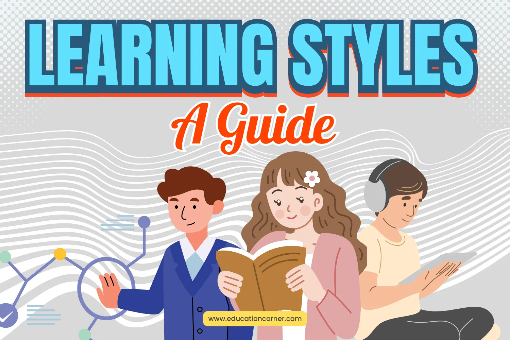

Belajar itu bukan hanya tentang menghafal, tetapi memahami dan menerapkannya. Setiap orang memiliki gaya belajar yang berbeda, dan menemukan metode yang tepat bisa meningkatkan efektivitas pembelajaran.
"Belajar itu bukan tentang menghafal, tapi memahami dan menerapkannya dalam kehidupan."
Sumber: Education Corner